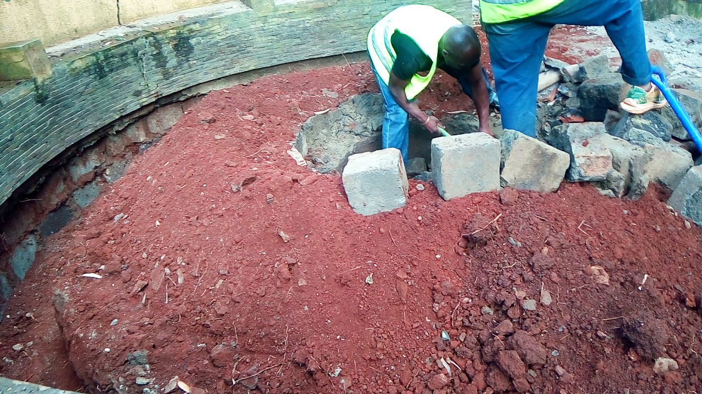
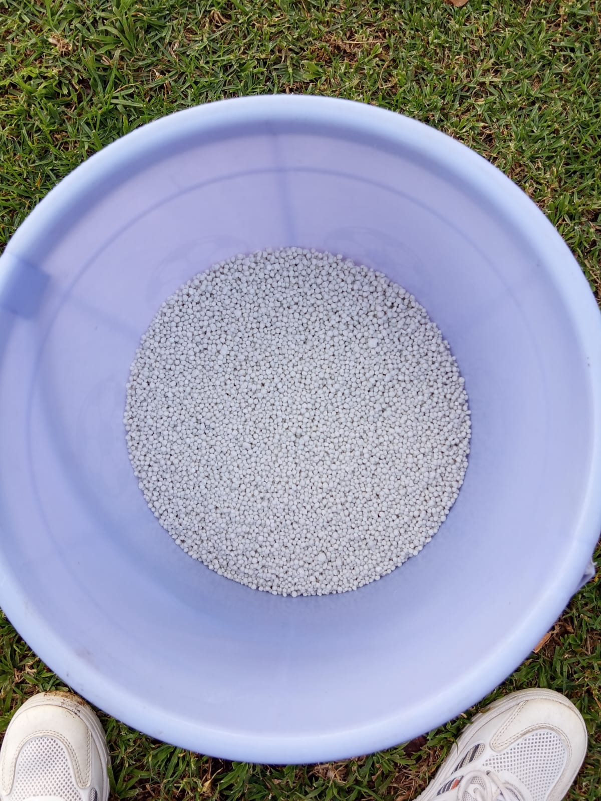

1. Mucheru World of Golf — Dam 2 Excavation, Materials & Infrastructure
2nd Dam excavation, earth haulage, green material deliveries (hardcore, red soil, ballast), entrance gate installation & asset transfers
- Dam 2 Excavation Progress: Excavation of the 2nd Dam actively underway using heavy excavator machinery over a 9.5-hour shift.
- Haulage Volume: Completed 77 tipper trips of excavated soil from the dam basin.
- Soil Disposal & Grading: Excavated soil dumped along old quad bike tracks and across uneven low-lying ground to establish smooth contours.
- Green Irrigation: Turned on overhead sprinklers to irrigate Greens 5 and 7.
- Hardcore Rock Delivery: 18 tipper loads delivered (allocated at 6 lorries per green for Greens 1, 2, & 3).
- Red Soil Topsoil Delivery: 18 tipper loads of red soil delivered (6 lorries per green for Greens 1, 2, & 3).
- Ballast Delivery: 3 lorry loads of drainage ballast delivered (1 lorry per green for Greens 1, 2, & 3).
- Hardcore Laying: Manual wheelbarrow transport, hand-placing, and structural arrangement of hardcore rock ongoing for Greens 1 and 3.
- Pipes & Supplies: Delivery of orange PVC irrigation pipes, heavy-duty pipe connectors, and green boundary/shade netting.
- Entrance Gates: Main entrance gates for the golf course fitted and aligned.
| Material Type | Total Deliveries | Allocation Breakdown | Current Status |
|---|---|---|---|
| Hardcore Rocks | 18 Lorries | 6 Lorries per Green (Greens 1, 2 & 3) | Laying underway on Greens 1 & 3 |
| Red Soil | 18 Lorries | 6 Lorries per Green (Greens 1, 2 & 3) | Stockpiled on site for green profiling |
| Ballast Stone | 3 Lorries | 1 Lorry per Green (Greens 1, 2 & 3) | Delivered & positioned for sub-base drain |
- Fencing Asset Transfer: Relocated wooden fence posts and fencing wire rolls from the golf project land to the farm premises.
- Gate Pillar Straightening: Utilized farm tractor winch cable to pull and straighten leaning concrete gate pillars at the golf entrance.
- Gate Transport: Transported an auxiliary steel gate from the golf site to the farm location.
📷 Mucheru World of Golf Visual Documentation

Dam 2 Excavation Shift Commencement
Sunward hydraulic excavator commencing 9.5-hour excavation shift on Dam 2 with haulage tippers lined up.

Dam 2 Soil Loading & Haulage
Excavator loading topsoil into 10-wheeler tipper truck; 77 trips completed during shift.

Dam 2 Basin Excavation Progress
Broad perspective of excavated Dam 2 reservoir basin showing deepened floor level.

Soil Disposal along Quad Bike Tracks
Excavated soil dumped in continuous mounds along former quad bike trail to level terrain.

Terracing & Ground Leveling Mounds
Dam 2 spoil mounds distributed across low spots and uneven ground zones.

Red Soil Tipping for Greens 1, 2 & 3
Tipper truck offloading rich red topsoil; total 18 loads delivered across Greens 1, 2, & 3.

Red Soil Delivery Arrival
High-volume tipping of red soil creating dust plume on delivery access track.

Red Soil Stockpile Verification
Site workers verifying delivered red soil heap beside acacia trees near green staging zone.

Greens Materials Stockpiles
Side-by-side stockpiles of red soil, hardcore rocks, and ballast stone ready for green installation.

Hardcore Rock Offloading
Tipper truck offloading coarse hardcore rocks for structural sub-base drainage layer.

Green Foundation Hardcore Bed
Leveled bed of hand-arranged hardcore rocks forming sub-base for Greens 1 and 3.

Hand-Arranging Hardcore on Greens 1 & 3
Ground crew utilizing wheelbarrows to manually lay and hand-pack hardcore stones.

Ballast Stone Delivery & Green Prep
3 lorries of ballast stone delivered for drainage layer beneath green red soil matrix.

Irrigation PVC Pipe Delivery
Pickup truck transporting long bundle of orange PVC irrigation mainlines to golf site.

Pipe Fittings & Boundary Shade Netting
Truck bed containing sacks of PVC pipe connectors, elbows, and rolls of protective shade net.

Fitted Golf Course Entrance Gate
Newly mounted grey tubular steel entrance gate secured to heavy timber support posts.

Tractor Gate Pillar Alignment
Tractor winch cable pulling concrete gate pillar vertical while site worker adjusts base foundation.
Fence Post Relocation to Farm
Tractor trailer loaded with treated timber fence posts transferred from golf boundary to farm.

Fence Wire & Gate Transfer
Tractor trailer carrying rolls of barbed wire fencing and auxiliary steel gate to farm.

Greens 5 & 7 Irrigation
High-pressure rotary impact sprinklers operating on Greens 5 and 7 to maintain turf moisture.
🎥 Dam 2 Excavation Video Recordings
2. Chaka Farms — Plumbing, Canine Unit & Grounds Maintenance
Plumbing repairs, canine grooming & off-leash walking, paddock rain hose irrigation, dairy logging, and compound cleaning
- Laundry Area Drainage: Unblocked and cleared clogged drainage lines for the toilet, washbasin sink, and laundry area drain Gully.
- Office Washroom Sink Repair: Repaired and secured the wall-mounted washroom pedestal sink near the office premises.
- Kennel Sanitation: Complete washing, disinfection, and cleaning of all individual dog kennels.
- Grooming & Hygiene: Bathing, coat brushing, and grooming routines conducted for all resident dogs.
- Afternoon Off-Leash Walking: Conducted afternoon off-leash walking exercise and socialization in open paddock spaces.
- Rain Hose Pasture Irrigation: Deployed and operated flexible perforated rain hose lines across 2 paddock fields to promote lush pasture re-growth.
- Milking Yield Log: Daily milk collection recorded across morning and evening milking sessions.
| Session | Morning | Evening | Total Daily Yield |
|---|---|---|---|
| Milk Yield | 3.5 Litres | 3.0 Litres | 6.5 Litres |
- Groundskeeping: General compound sweeping, garden bed weeding, and cleanliness maintenance across farm grounds.
📷 Chaka Farms Visual Documentation

Laundry Area Drainage Unblocked
Cleared floor drain chamber and gully pit in tiled laundry area following plumbing work.

Office Washroom Sink Repair
Repaired wall-mounted white porcelain sink with chrome flex pipe connections near office.

Canine Grooming & Kennel Care
White fluffy dog groomed and resting inside disinfected steel-mesh kennel enclosure.

Dog Grooming Session — View 2
Alternate perspective of groomed dog in clean kennel stall with fresh water bowls.

Kennel Stall Cleaning & Resting
Dog enjoying clean, shaded timber kennel compartment post-grooming session.

Canine Unit Kennel Inspection
Groomed dog standing inside freshly washed kennel enclosure ready for afternoon exercise.

Rain Hose Paddock Irrigation
Perforated rain hose lines routed across pasture grass field to irrigate 2 paddock zones.

Paddock Rain Hose Lines — View 2
Rain hose lines extended across paddock turf promoting uniform moisture distribution.
3. Kabete Residence — Roof Tile Finalization, Carpark Painting & Masonry
Main house roof tile painting completed, carpark canopy paintwork, auxiliary roof tiles, fireplace clearance, storage tank slab masonry, and pet care
- Main House Roof Finish: Painting of all terracotta roof tiles on the main stone house is officially 100% completed, delivering a uniform, vibrant finish beneath solar panel arrays.
💯 Milestone Achieved — Main House Roof Painting Complete
Roof tile paint application across all pitched roof elevations of the main stone house is fully completed and inspected.
- Carpark Canopy Painting: Painter (Muthekinju crew) applied protective terracotta paint to steel framing and roof structures of the vehicle carpark canopy.
- Generator & Lawnmower House Roof Tiles: Roof tiles covering the generator house and lawnmower store were fully painted in matching terracotta finish.
- Fireplace Site Clearance: Deep earth excavation and site clearance ongoing around the circular brick outdoor fireplace pit.
- Main Storage Tank Slab: Structural steel rebar mesh and stone masonry blockwork actively progressing on the water storage tank foundation slab.
- Evening Feeding Routine: Evening meal service provided for golden retriever Ajabu and resident cats on the tiled veranda floor.
📷 Kabete Residence Visual Documentation

Main House Roof Tiles — 100% Completed
Finished terracotta orange painted roof tiles above stone main house, solar panels mounted on top elevation.

Carpark Canopy Paint Works
Painter using long extension pole to paint structural steel canopy roof frame at vehicle carpark entrance.

Generator & Lawnmower House Roof
Painter positioned on ladder applying terracotta paint to pitched roof tiles of generator house.

Fireplace Clearance — Work in Progress
Two workers clearing soil mound inside circular concrete-walled fireplace seating pit.

Fireplace Pit Trenching & Excavation
Deep trench excavated into red soil around inner masonry wall of circular fireplace pit.

Fireplace Excavation — Deepening
Workers using shovels to deepen central pit of circular fireplace structure.

Main Storage Tank Slab — Rebar Mesh
Circular reinforced steel rebar grid laid over hardcore stone base in preparation for tank slab concrete pour.

Ajabu — Evening Dinner
Golden retriever Ajabu eating evening dinner from bowl on terracotta tiled veranda.

Resident Cats — Evening Dinner
Three resident cats eating evening meal from bowls on tiled floor inside Kabete residence.
4. Amani Cottage — Lawn Fertilization & Housekeeping
CAN fertilizer application, lawn irrigation, grounds litter cleanup, and interior house cleaning & arrangement
- CAN Fertilizer Application: Broadcasted Calcium Ammonium Nitrate (CAN) fertilizer across the front lawn grass to boost turf growth and green density.
- Immediate Irrigation: Thoroughly irrigated the fertilized lawn area using rotary sprinklers to dissolve fertilizer granules into the root zone.
- Grounds Cleanliness: Litter collection, sweeping, and general grounds cleaning completed across surrounding cottage garden areas.
- Interior Housekeeping: Domestic housekeeper completed comprehensive dusting, floor cleaning, furniture polishing, and room arrangement throughout Amani Cottage.
📷 Amani Cottage Visual Documentation

CAN Lawn Fertilizer Granules
Bucket filled with granular Calcium Ammonium Nitrate (CAN) fertilizer ready for lawn broadcast.

Front Lawn Irrigation — Post-Fertilization
Rotary sprinkler watering green lawn grass in front of timber-framed Amani Cottage post-fertilizer application.

Amani Living Room — Clean & Arranged
Overhead view of main living room featuring pristine white modular sectional couch, rug, coffee tables, and stone fireplace.

Amani Lounge Interior — Cleaned
Dusted and arranged upper lounge area with curved beige sectional sofa and circular cowhide coffee table.